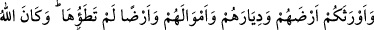

26. Allah, ehl-i kitaptan, onlara (müşrik ordularına) yardım edenleri kalelerinden
indirdi ve kalplerine korku düşürdü; bir kısmını öldürüyor, bir kısmını da esir
alıyordunuz.
“Allah,” ahdi bozdukları zaman “ehl-i kitaptan” Kurayzaoğullarından “onlara”
Rasûlullah ve müslümanlara saldıran müşrik ordularına, “yardım edenleri kalelerinden
indirdi ve kalplerine korku düşürdü” öyle ki kendilerini ölüme, âile ve çocuklarını da
esarete teslim ettiler. Nitekim âyetin devamı bunu şöyle haber vermektedir: Onlar
tarafından muhâlefet bir tarafa bir hareket bile olmaksızın “bir kısmını” erkeklerini
“öldürüyor, bir kısmını” kadınlarını ve çocuklarını “da esir alıyordunuz.”
Kurayzaoğulları, Medine yahudilerinden bir topluluk olup Evs kabilesi ile anlaşma
hâlindeydiler. O zaman Evs kabilesinin başkanı Sa‘d b. Muâz (r.a.) idi.
“ deri kayış ile bağlamak demektir. Esir de onunla isimlendirilmiştir. Sonra deri
kayış ile bağlı olmasa bile yakalanıp bağlanan herkese ‘esir’ denilmiştir.
27. Allah, onların yerlerine, yurtlarına, mallarına ve ayak basmadığınız
topraklara sizi mirasçı yaptı. Allâh’ın her şeye gücü yeter.
“Allah, onların yerlerine” çiftliklerine ve bahçelerine “yurtlarına” kalelerine ve
evlerine “mallarına” paralarına, ev eşyalarına ve sürülerine “ve ayak basmadığınız
topraklara” Fars, Rum ve kıyamete kadar fethedilecek arazi ve mülklere “sizi mirasçı
yaptı.” Bu yerlerin ve malların müslümanlarda kalması, vârislere kalan mirasa
benzetilmiştir. Çünkü müslümanların onlarla akrabalık, din ve velâyet gibi herhangi bir
bağları yoktur. Allah Teâlâ onları müslümanların elleriyle helak etti. Varise kalan miras
malı gibi onların mallarını ve mülklerini, müslümanlara ganîmet yaptı.
“Allâh’ın her şeye gücü yeter.” Teslim aldığınız topraklara sizi mirasçı yapması ile
onun gücünün yettiği şeylerden bir kısmına şâhid oldunuz. O halde daha sonra
olacakları buna kıyas edin.
Kâşifî der ki: “Cenâb-ı Hak kulların efendisi olan Hz. Peygamber’in arkadaşları için
şehirleri fethetmeye ve orada hâkimiyet kurdurmaya kâdirdir.”
Senin azim orduna fetih ve zafer yoldaştır,
Şüphesiz her nefeste başka iklimi (coğrafyayı) dolaşırsın.
Rivâyete göre Rasûlullah (s.a.) öğle vakti Hendek savaşından döndü ve öğle namazını
kıldı. Zeyneb (r.a.)’nın evine geldi. Zeynep (r.a.), O’nun mübarek başının yarısını